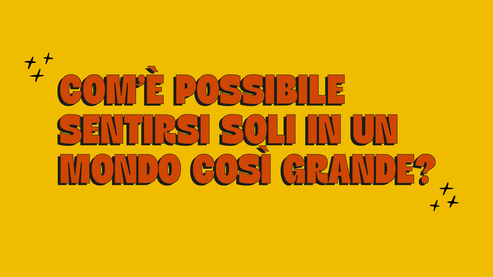
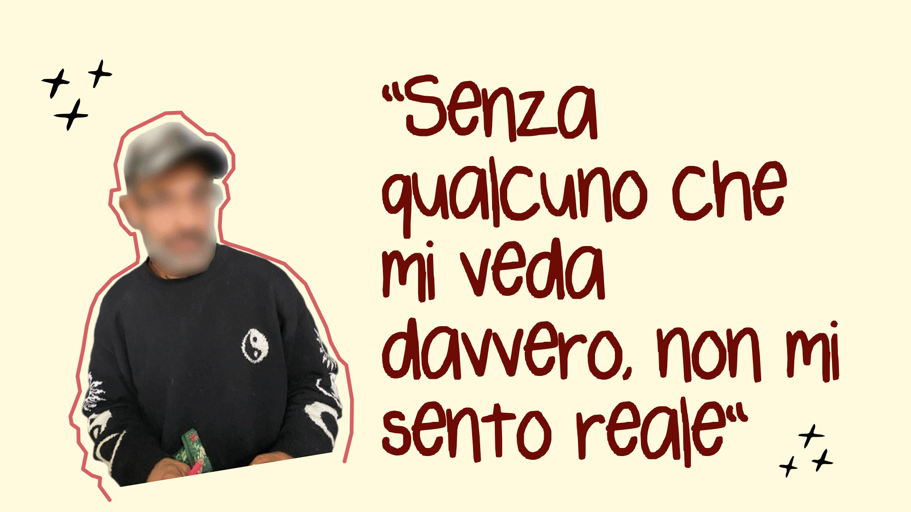

01. Il progetto
Progetto per la Rete delle Case di Quartiere, Torino

Il progetto nasce in collaborazione con La Rete delle Case di Quartiere. L’obiettivo è la progettazione di un nuovo corso, per coinvolgere i cittadini, da inserire nelle Case di Quartiere, insieme alla definizione della sua identità visiva e della strategia di sponsorizzazione. L’analisi dello scenario ha portato all’individuazione di un campione di persone che si percepiscono come invisibili e inutili all’interno della società.
